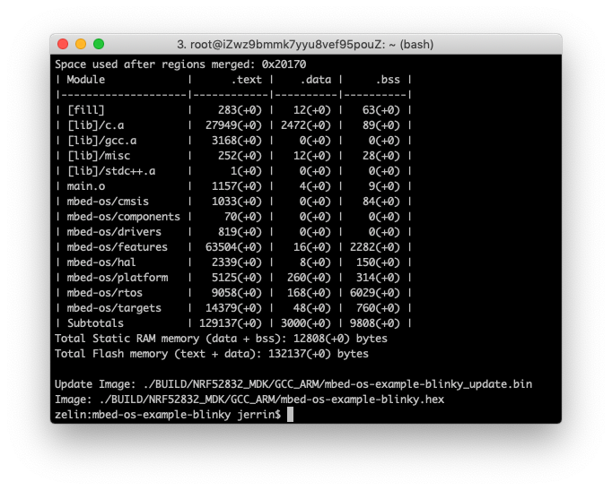
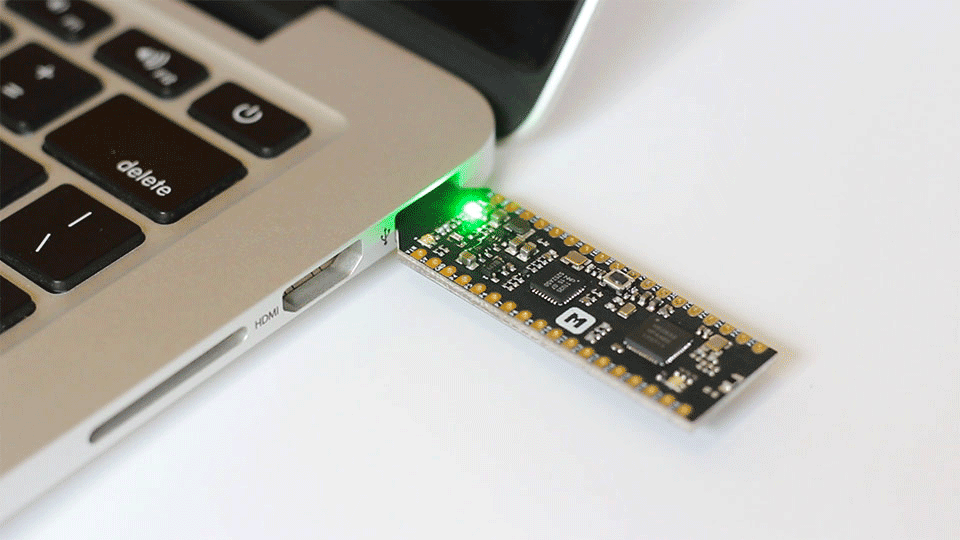

Arm Mbed OS
Arm 开源、面向物联网小型设备的实时操作系统¶

简介¶
Arm Mbed OS 是 Arm 专门为物联网设备而设计的开源嵌入式操作系统，主要面向 ARM Cortex-M 系列微控制器，非常适合涉及智能城市、智能家庭和穿戴式设备等领域的应用程序。
相比于其他嵌入式操作系统，Arm Mbed OS 的主要优势在于：
- 安全性：提供 mbed TLS 和 mbed uVisor 安全机制
- 连接性：支持多种协议栈，包括 Bluetooth LE, Wi-Fi, 6LoWPAN, Thread, Lora等等
- 完整的工具链支持：提供在线 IDE, mbed CLI 以及 第三方 IDE
- 良好的社区生态
了解更多内容，可以直接访问 Mbed OS 开发者网站.
使用 Arm Mbed CLI¶
Arm 为 Mbed OS 提供了离线开发工具 Mbed CLI，该工具支持跨平台，可以运行在 Windows，Linux 和 macOS 平台上。
安装 Mbed CLI¶
在 Windows 上，最简单的方法是使用 Mbed CLI Windows .exe 安装包。
在 Linux 和 macOS系统，可以使用 pip 进行安装：
$ pip install mbed-cli
安装完成后，可以使用 mbed help 验证是否正确安装。
设置开发环境¶
接着，需要添加工具链路径配置：
$ mbed config -G GCC_ARM_PATH "<path to GNU Arm bin>" [mbed] <path to GNU Arm bin> now set as global GCC_ARM_PATH $ mbed config --list [mbed] Global config: GCC_ARM_PATH=<path to GNU Arm bin>
添加 nRF52832-MDK 支持¶
首先，从 Arm Mbed 官方仓库克隆 Mbed OS 源码：
$ git clone https://github.com/ARMmbed/mbed-os.git
在 mbed-os\targets\targets.json 文件中添加以下目标描述：
"NRF52832_MDK": { "inherits": ["MCU_NRF52832"], "release_versions": ["5"], "device_name": "nRF52832_xxAA" },
另外需要在 mbed-os/targets/TARGET_NORDIC/TARGET_NRF5x/TARGET_NRF52/TARGET_MCU_NRF52832/TARGET_NRF52832_MDK/ 增加 PinNames.h 和 device.h 文件：
// PinNames.h #ifndef MBED_PINNAMES_H #define MBED_PINNAMES_H #include "cmsis.h" #ifdef __cplusplus extern "C" { #endif typedef enum { PIN_INPUT, PIN_OUTPUT } PinDirection; #define PORT_SHIFT 3 typedef enum { p0 = 0, p1 = 1, p2 = 2, p3 = 3, p4 = 4, p5 = 5, p6 = 6, p7 = 7, p8 = 8, p9 = 9, p10 = 10, p11 = 11, p12 = 12, p13 = 13, p14 = 14, p15 = 15, p16 = 16, p17 = 17, p18 = 18, p19 = 19, p20 = 20, p21 = 21, p22 = 22, p23 = 23, p24 = 24, p25 = 25, p26 = 26, p27 = 27, p28 = 28, p29 = 29, p30 = 30, p31 = 31, // Not connected NC = (int)0xFFFFFFFF, LED1 = p22, LED2 = p23, LED3 = p24, BUTTON1 = p18, RX_PIN_NUMBER = p19, TX_PIN_NUMBER = p20, CTS_PIN_NUMBER = NC, // not connected RTS_PIN_NUMBER = NC, // not connected // mBed interface Pins USBTX = TX_PIN_NUMBER, USBRX = RX_PIN_NUMBER, STDIO_UART_TX = TX_PIN_NUMBER, STDIO_UART_RX = RX_PIN_NUMBER, STDIO_UART_CTS = CTS_PIN_NUMBER, STDIO_UART_RTS = RTS_PIN_NUMBER } PinName; typedef enum { PullNone = 0, PullDown = 1, PullUp = 3, PullDefault = PullUp } PinMode; #ifdef __cplusplus } #endif #endif
// device.h #ifndef MBED_DEVICE_H #define MBED_DEVICE_H #include "objects.h" #endif
最后，需要提交修改：
$ git add *
$ git commit -m "add support for nRF52832-MDK"
编译运行第一个示例¶
现在可以开始尝试编译第一个示例，这里以 mbed-os-example-blinky 为例：
打开命令行终端，切换到示例目录：
$ cd ./nrf52832-mdk/examples/mbedos5/mbed-os-example-blinky/
为该示例添加 Mbed OS 库：
mbed-os-example-blinky$ mbed config root . mbed-os-example-blinky$ mbed add <path to mbed-os repository>
使用 mbed compile 进行编译：
mbed-os-example-blinky$ mbed compile --target NRF52832_MDK --toolchain GCC_ARM --flash
增加 --flash 参数，将会在编译完成后自动将固件下载到 nRF52832-MDK 硬件上。
如果 mbed detect 无法检测到板子，可以运行以下命令添加：
$ mbedls --mock=1024:nRF52832-MDK
提示
你也可以参考前面的内容 “如何下载固件？” 下载固件。

观察运行结果：

低功耗蓝牙示例¶
Mbed OS 对低功耗蓝牙支持非常友好，这里提供一些低功耗蓝牙示例：
./nrf52832-mdk/examples/mbedos5/mbed-os-example-ble ├── BLE_BatteryLevel ├── BLE_Beacon ├── BLE_Button ├── BLE_EddystoneObserver ├── BLE_EddystoneService ├── BLE_GAPButton ├── BLE_HeartRate ├── BLE_LED ├── BLE_LEDBlinker ├── BLE_Thermometer └── README.md
可以切换到示例目录，例如，BLE_BatteryLevel:
$ cd BLE_BatteryLevel
添加 Mbed OS 库：
BLE_BatteryLevel$ mbed add <path to mbed-os repository>
编译下载：
BLE_BatteryLevel$ mbed compile --target NRF52832_MDK --toolchain GCC_ARM --flash
打开 nRF Connect app，找到名为 BATTERY 的设备，连接设备，可发现 UUID 为 0x180F 的电池服务，该服务包含 UUID 为 0x2A19 的 Battery level 属性。

其他低功耗蓝牙示例使用方法类似，你可以自行验证。
更多示例¶
我们会不定期增加更多有趣的示例到 nrf52832-mdk 仓库中，敬请关注！
参考资源¶
问题反馈¶
如果在开发过程遇到任何问题，可以通过 GitHub Issue 反馈。